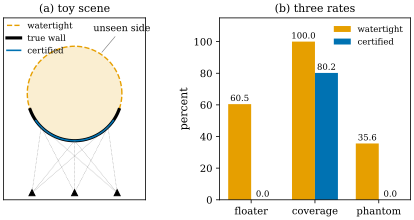
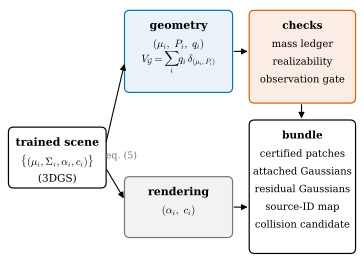

50.1 Problem and Key Idea
Goals
- 학습된 3DGS의 Gaussian 집합을 편집·충돌용 asset으로 바로 쓰기 어려운 세 가지 이유를 논문의 말과 숫자로 설명할 수 있다.
- 논문의 두 핵심 아이디어, 곧 “Gaussian을 discrete unoriented varifold로 읽고 geometric mass를 opacity와 따로 둔다”와 “realizable한 것과 identifiable한 것은 다르다”를 각각 한 문단으로 말할 수 있다.
- floater, coverage, phantom collision이 무엇을 재는지 장난감 장면에서 계산하고, precision과 coverage가 왜 서로 맞바뀌는지 설명할 수 있다.
- 논문이 주장하는 기여 여섯 가지가 이 장의 어느 절에서 어떤 근거로 다뤄지는지 찾을 수 있다.
Prerequisites
- Chapter 46: point cloud varifold(Definition 46.4.6), opacity가 mass가 아니라는 것과 clone·split의 효과(Example 46.8.3, Example 46.8.4), Gaussian varifold (46.8.3).
- Part IV: split과 clone(Section 29.4), densification(Section 29.5), TSDF fusion(Section 30.1), 2DGS와 SuGaR·Poisson(Section 30.3).
Motivation
Chapter 46의 끝에서 Gaussian 하나를 varifold의 원자 \((\mu, P, q)\)로 읽었다. 위치는 중심, plane은 covariance의 큰 두 축, mass는 opacity와 따로 둔 장부의 값이다(Section 46.8). 그리고 surface를 Gaussian으로 고르게 덮으면 그 varifold가 surface의 varifold에 가깝다는 것도 보았다(Example 46.8.6). 그 예의 해설은 학습된 3DGS가 이 가정을 만족하는지는 따로 진단해야 한다고 적고 이 장을 가리켰다. 이 장은 그 진단을 포함해 Gaussian 읽기를 하나의 시스템으로 만든 논문 [ManifoldGS26]을 읽는다.
이 논문은 수학 정리를 증명하는 논문이 아니다. 3DGS 장면에서 “믿을 수 있는 기하만 골라 asset으로 내보내는” 공학 시스템을 제안하고, 그 설계를 varifold와 surface의 compatibility 조건이라는 말로 정당화한다. 그래서 이 장은 두 가지를 함께 본다. 수식이 정확히 무엇을 보장하는가, 그리고 실험이 그 보장과 어떻게 이어지는가.
The Paper
먼저 사실부터 적는다. 논문은 B. Li(Peking University)의 단독 저작이고, 첫 쪽에 “Preliminary Draft”라고 적혀 있으며, arXiv:2608.00214 v1(2026년 7월 31일, cs.CV)이다. 학회나 저널의 게재 표기는 없다. 본문 7쪽과 부록 A–C 2쪽, 참고문헌 16편으로 9쪽이다. 실험은 DTU [Jensen14]의 세 장면(scan24, scan65, scan105)과 합성 장면 몇 개에서 했다. 본문은 구현을 “the repository”라 부르고 branch 이름(a5-asset-benchmark-3scene)까지 적지만, 공개 코드의 주소는 없다. 이 장에서 논문 번호는 v1을 따른다.
번호가 붙은 결과는 Definition 1과 Proposition 1 두 개뿐이다. 나머지 결과는 번호 없는 문장과 식으로 나온다. 이 장은 그런 결과를 “§4의 bound (10)”처럼 논문의 절과 식 번호로 부르고, 우리 항목 번호(50.M.K 꼴)를 따로 붙인다.
Three Obstacles
초록의 첫 문장이 문제를 셋으로 나눈다. 3DGS는 새로운 시점의 영상을 잘 그리지만, 그 Gaussian들은 구조를 가진 asset으로 바로 쓸 수 없다. 이유는 다음과 같다.
- opacity는 더해지는 넓이 measure가 아니다. 같은 자리의 두 Gaussian은 alpha compositing으로 \(1 - (1 - \alpha)^2\)만큼 가리지 \(2\alpha\)만큼 가리지 않는다. Chapter 46에서 본 대로, 같은 surface 조각을 clone하면 렌더링 coverage가 \(2 - \alpha/2\)배, ellipse 넓이의 합이 \(2\)배가 되어 서로도 맞지 않는다(Example 46.8.3).
- clone과 split이 기하를 바꾼다. 3DGS의 split은 scale을 \(1.6\)으로 나눈 자식 둘을 두므로 ellipse 넓이의 합이 \(2/1.6^2 = 0.78\)배가 된다(Example 46.8.4). 렌더러가 sampling 밀도를 바꾼 것뿐인데 “surface의 넓이”가 바뀐다.
- watertight mesh 추출은 관측하지 않은 곳에 충돌면을 만든다. Poisson reconstruction [Kazhdan06]이나 TSDF fusion(Section 30.1)은 닫힌 surface를 만든다. 보지 않은 뒷면도 어떻게든 닫으므로, 물리 엔진에서 그 mesh를 충돌용으로 쓰면 실제로는 빈 공간에 벽이 생긴다.
셋째 문제를 숫자로 보자. Figure 50.1.1은 이 장에서 만든 장난감 장면이다. 진짜 장면은 얇은 벽 하나, 곧 unit circle의 호(각도 \(200^\circ\)–\(340^\circ\))이고 카메라 셋이 아래에서 본다. (a)의 주황 점선은 watertight 후보로, 보지 않은 윗부분까지 원을 닫고 그 안을 고체로 본다. 파란 호는 잘 보인 가운데 부분(\(215^\circ\)–\(325^\circ\))만 남긴 인증된(certified) 열린 조각이다. 이제 세 가지 비율을 잰다. 허용오차는 \(0.02\)다. 아래 정의는 이 장난감에서 우리가 정한 것이다. 논문은 같은 이름의 metric을 쓰지만 정확한 정의를 적지 않는다(Section 50.5).
- floater: 후보 surface 가운데 진짜 벽에서 허용오차보다 먼 부분의 비율. 낮을수록 좋다(precision의 반대).
- coverage: 진짜 벽 가운데 후보에서 허용오차 안에 있는 부분의 비율. 높을수록 좋다(recall).
- phantom collision: 빈 공간에 뿌린 시험점(probe) 가운데 후보가 막는 비율. 고체 후보는 그 안이거나 boundary에서 허용오차 안에 있는 probe를, 열린 조각은 허용오차 안에 있는 probe를 막는다. 낮을수록 좋다.
(b)를 보자. watertight 후보는 벽을 모두 덮어 coverage가 \(100\%\)이지만, 길이의 \(60.5\%\)가 벽이 아닌 곳에 있고 빈 공간 probe의 \(35.6\%\)를 막는다. 원 안이 실제로는 비어 있기 때문이다. 인증된 조각은 floater와 phantom이 \(0\)이지만 벽의 \(80.2\%\)만 덮는다. 어느 쪽도 모든 metric에서 이기지 않는다. 이것이 논문이 결론에서 쓰는 “precision–coverage tradeoff”다(Section 50.5에서 DTU의 숫자로 본다).

Verification: verify/v-50-1-problem-key-idea.py
The Question and the First Idea
§1은 기존의 surface 지향 방법들을 셋으로 요약한다. primitive를 평면으로 만들거나(2DGS [Huang24]), Gaussian을 mesh surface에 맞추거나(SuGaR [Guedon24]), depth와 normal의 regularization을 넣는다(PGSR [Chen24PGSR]). 논문은 이것과 다른 쪽에서 묻는다.
논문의 답은 다음과 같다. surface 같은 Gaussian(두 축이 길고 한 축이 짧은 것)을 어떤 discrete geometric measure의 표본으로 본다. covariance의 eigensystem은 그 자리의 tangent plane과 “몇 차원처럼 생겼는가”라는 label을 준다. 그리고 opacity와 따로 둔 양의 mass 변수가 넓이를 근사하는 quadrature의 가중치 역할을 한다. opacity를 mass로 쓰지 않는 이유는 opacity가 시점에 따라 달라지는 alpha compositing에 참여하는 양이지 보존되는 기하량이 아니기 때문이다. 그렇게 얻는 대상이 위치와 tangent 2-plane 위의 unoriented varifold다(Definition 46.4.1, Definition 46.4.6). 정확한 정의는 Definition 50.2.1이다.
이렇게 읽으면 refinement가 다른 문제로 바뀐다. split과 merge는 geometric mass와 국소 moment(barycenter 등)를 “제어된 cell 지름 항까지” 보존해야 한다. 곧 refinement는 mass를 어디로 얼마나 옮기느냐의 transport 문제가 된다(Section 50.3). 또 원래 Gaussian에서 나중에 인증된 patch 단위로 가는 명시적인 source mapping이 생긴다. 어느 Gaussian이 어느 patch의 mass가 되었는지 장부에 남기 때문이다. 논문은 이것이 구조적 편집과 보수적인 충돌 proxy의 바탕이라고 한다.
The Second Idea: Realizable Is Not Identifiable
§1의 둘째 부분은 흔히 섞이는 두 질문을 나눈다. 어떤 국소적인 tangent·curvature field가 realizable하다는 것은 근처의 어떤 surface와 compatible하다는 뜻이다. 그 field가 sparse RGB 관측으로부터 identifiable하다는 것은 그 surface가 진짜 surface라고 관측으로 결정할 수 있다는 뜻이다. 앞의 것은 뒤의 것을 함의하지 않는다. smooth하고 모순 없는 평면이 사실은 구의 일부를 잘못 복원한 것일 수 있다.
그래서 논문은 local support chart, covariance normal, fundamental form의 compatibility에 기반한 realizability 진단을 넣되, 이 진단이 inverse problem을 스스로 푼다고 주장하지 않는다. 두 낱말의 정확한 형태(Bonnet의 정리에 기댄 compatibility, rendering Jacobian의 최소 singular value)와 이 구분을 숫자로 보는 예는 Section 50.4에서 다룬다.
What Comes Out: A Hybrid Asset Bundle
Figure 50.1.2를 왼쪽에서 오른쪽으로 따라가 보자. 학습된 장면 \(\{(\mu_i, \Sigma_i, \alpha_i, c_i)\}\)은 논문의 식 (5)에 따라 둘로 갈린다. 위쪽 파란 상자는 기하로, 원자 \((\mu_i, P_i, q_i)\)와 그 합 \(V_{\mathcal{G}}\)다. 아래쪽 회색 상자는 렌더링으로, opacity와 색이다. 기하 쪽에는 세 가지 검사가 붙는다(주홍 상자). refinement의 mass 장부(§4), realizability 진단(§5), 관측 근거를 보는 observation gate(§6)다. 그 결과가 오른쪽 아래의 bundle이다.

bundle은 다음을 담는다(§6, §7.5).
- certified open patch: 관측 근거가 충분하다고 인증된, boundary가 있는 열린 surface 조각들. 편집과 충돌에 쓰는 기하다.
- attached appearance Gaussian: 인증된 patch에 붙어 그 겉모습을 그리는 Gaussian.
- residual Gaussian(residual splat layer): 인증되지 않은 내용. mesh로 억지로 닫지 않고 Gaussian으로 남겨 렌더링에만 쓴다.
- source-ID mapping: 원래 Gaussian이 어느 patch에 들어갔는지의 기록. 편집할 때 무엇을 함께 움직일지 정한다.
- conservative collision candidate와 manifest: 충돌 판정에 쓰는 보수적인 기하와 bundle의 목록.
Claimed Contributions
논문이 §1에 적은 기여 여섯 가지를 우리 말로 옮기고, 이 장에서 그것을 다루는 곳과 근거의 종류를 붙인다. 이것은 논문의 주장이다. 근거가 주장을 얼마나 지지하는지는 Section 50.6에서 평가한다.
| claim (paraphrased) | evidence | here |
|---|---|---|
| 1. geometric mass를 opacity와 따로 두고 refinement에 보존적인 Gaussian → varifold 해석 | 정의, bound (7) | 50.2 |
| 2. adaptive refinement의 보존 규칙과 bounded Lipschitz distance에서의 안정성 진술 | Prop. 1, (9), (10) | 50.3 |
| 3. tangent support와 근사적 fundamental-form compatibility에 기반한 realizability 진단 | 잔차 다섯 개(공식 없음) | 50.4 |
| 4. open patch, attached Gaussian, residual splat, source mapping, collision candidate를 나눈 인증된 hybrid asset export | 구현 | 50.5 |
| 5. 인증된 편집, texture charting, collision precision, 단순화, 외부 영역 annotation, Poisson·SuGaR·2DGS baseline을 담은 DTU 세 장면의 고정된 asset benchmark | Table 2–4, Fig. 1–2 | 50.5 |
| 6. sparse RGB만으로 얻은 compatibility를 surface 복원 주장으로 올리면 안 되는 이유를 보이는 실험적 감사(audit) | Table 1, §7.3 | 50.4, 50.5 |
초록의 마지막 문장이 논문의 입장을 정리한다. 이 draft가 내세우는 것은 “인증된 hybrid Gaussian asset”이지 “RGB만으로 하는 최고 성능의 복원”이 아니다. 초록이 요약하는 결과는 이렇다. DTU 세 장면에서 patch로 정의한 편집의 누수(leak)는 \(0\), patch texture의 round-trip PSNR은 \(30.1/35.3/33.7\) dB, 충돌 floater 넓이는 공식 2DGS mesh보다 모든 장면에서 작고(두 장면에서는 차이가 크다) SuGaR와 Poisson보다도 작다. 대신 coverage가 낮다. 그리고 부정적 결과 하나를 남긴다. local realizability는 sparse RGB에서의 identifiability가 아니다.
Summary
- 논문은 3DGS를 asset으로 쓰기 어려운 이유를 셋으로 든다. opacity는 더해지는 넓이가 아니고, clone·split이 기하를 바꾸며, watertight 추출이 보지 않은 곳에 충돌면을 만든다(Figure 50.1.1).
- 첫째 아이디어: surface 같은 Gaussian을 위치·plane·geometric mass \((\mu_i, P_i, q_i)\)의 discrete unoriented varifold로 읽고, \(q_i\)를 opacity와 따로 둔다. 그러면 refinement는 mass와 moment를 옮기는 transport 문제가 된다.
- 둘째 아이디어: 어떤 surface와 모순이 없음(realizable)과 진짜 surface로 결정됨(identifiable)은 다르다. compatibility 진단은 앞의 것만 본다.
- 내보내는 것은 인증된 open patch, attached·residual Gaussian, source mapping, 보수적 collision candidate를 담은 hybrid bundle이다(Figure 50.1.2). 결과는 precision–coverage tradeoff로 제시된다.
- 논문은 단독 저자의 preliminary draft이고, 이 묶음의 다른 세 논문을 인용하지 않는다. 그것과의 연결은 우리의 해석이다.
다음 절에서는 첫째 아이디어를 정확하게 쓴다. 논문의 Definition 1(Gaussian varifold surrogate)과, surface를 Gaussian이 고르게 덮으면 두 varifold가 가깝다는 forward consistency bound (7)을 단위 sphere에서 직접 계산해 본다.
Quick check
Exercise 50.1.1 ★ Gaussian의 parameter \((\mu_i, \Sigma_i, \alpha_i, c_i)\) 가운데 논문의 식 (5)에서 기하 쪽으로 가는 것과 렌더링 쪽으로 가는 것을 나누어라. \(\Sigma_i\)에서는 무엇을 꺼내고 무엇을 버리는가? \(n_i\) 대신 \(-n_i\)를 써도 되는 이유는?
Solution
기하 쪽은 \(\mu_i\)와 \(\Sigma_i\)에서 꺼낸 plane \(P_i\), 그리고 새로 둔 mass \(q_i\)다. 렌더링 쪽은 \(\alpha_i\)와 \(c_i\)다. \(\Sigma_i\)에서는 큰 두 eigenvalue의 eigenspace, 곧 \(P_i = I - n_in_i^{\mathsf T}\)만 꺼내고, 축의 길이(\(\lambda_{ik}\))와 두 긴 축의 방향 구분은 기하 원자에 넣지 않는다(길이는 “surface 같은가”의 label과 진단에만 쓴다). \(P_i\)는 \(n_in_i^{\mathsf T} = (-n_i)(-n_i)^{\mathsf T}\)에만 의존하므로 normal의 부호는 상관없다. 이것이 “unoriented” varifold라는 뜻이다.
Exercise 50.1.2 ★ Figure 50.1.1의 장면에서 허용오차를 \(0\)으로 보고 계산하여라. (a) 인증된 조각을 \([230^\circ, 310^\circ]\)로 줄이면 coverage는 몇 %인가? (b) watertight 후보 대신 벽의 두 끝을 직선(chord)으로 이어 닫은 후보를 쓰면 floater는 몇 %인가?
Solution
(a) 벽은 \(140^\circ\), 조각은 \(80^\circ\)이므로 \(80/140 = 57.1\%\)다. floater와 phantom은 여전히 \(0\)이다. (b) arc length는 \(140^\circ = 2.443\)(라디안)이고 chord의 길이는 \(2\sin70^\circ = 1.879\)다. 후보의 길이 \(4.323\) 가운데 chord가 벽이 아니므로 floater는 \(1.879/4.323 = 43.5\%\)다. 원 전체로 닫을 때(\(61.1\%\))보다 작지만 \(0\)은 아니고, chord와 호 사이의 빈 공간은 여전히 phantom을 만든다.
Verification: verify/v-50-1-problem-key-idea.py
Exercise 50.1.3 ★ 참인지 거짓인지 말하고 이유를 써라. (a) compatibility 잔차가 모두 \(0\)인 field는 진짜 surface다. (b) 인증된 patch로 정의한 편집 대상에서 누수가 \(0\)이라는 것은 patch가 좋은 의미 단위(semantic segment)라는 증거다. (c) mass를 opacity와 따로 두면 split이 넓이를 바꾸지 않게 할 수 있다.
Solution
(a) 거짓. 잔차가 \(0\)이면 근처의 어떤 surface와 맞는다는 것(realizable)뿐이다. smooth한 평면도 잔차가 \(0\)이지만 진짜 surface가 구라면 틀린 답이다(Section 50.4). (b) 거짓. 대상 자체를 patch로 정의했으므로 누수 \(0\)은 구성상 당연하다. 논문도 그래서 외부 작업자가 고른 대상으로 따로 실험한다(Section 50.5). (c) 참. 자식들에게 mass를 나눠 주어 합이 부모의 mass와 같게 하면 된다. 넓이의 장부가 opacity와 무관하게 유지된다(Section 50.3).
Exercise 50.1.4 ★ 2DGS, SuGaR, GOF, PGSR를 “primitive의 모양을 바꾼다 / Gaussian을 surface에 맞추고 mesh를 추출한다 / opacity field에서 mesh를 추출한다 / depth·normal prior를 더한다”와 짝지어라. 이 가운데 논문의 충돌 비교(Table 4)에 baseline으로 나오는 것은 무엇이고, 나머지 하나의 baseline은 무엇인가?
Solution
2DGS는 primitive를 disk로 바꾸고, SuGaR는 Gaussian을 surface에 맞춘 뒤 mesh를 추출하고, GOF는 opacity field에서 mesh를 추출하고, PGSR는 depth·normal prior를 더한다(Table 50.1.2). Table 4의 baseline은 2DGS(공식 30k TSDF mesh)와 SuGaR(culled mesh), 그리고 3DGS 점에서 만든 Poisson reconstruction이다. GOF와 PGSR는 비교에 없다.